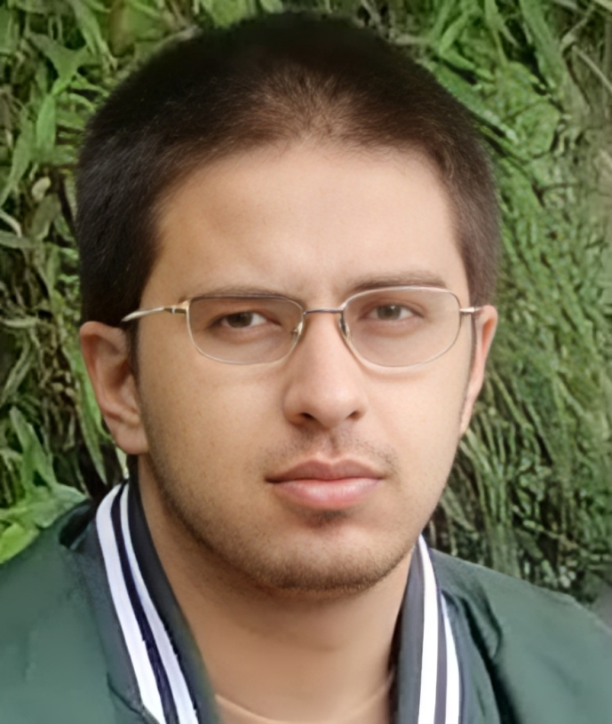

Bachelor's in Computer Science @ NUCES FAST ISB
Aug. 2023 – Present
CGPA: 2.85
__ ___ __ ______ __ ______ ___ ___ ___ _____ ______ ______
/ |/ / / / / / __ \ / / / / __ \/ _ \ / _ \ / _ \/ ___/ / / / / / / __ \
/ /|_/ / / /_/ / /_/ // /_/ / /_/ / /_/ / /_/ / /_/ / /___ / /_/ / / / /_/ /
/_/ /_/ \____/\____/ \____/\____/_/ /_/_/ /_/_/ /_/\____/ \____/ /_/\____/

CS student at NUCES FAST with hands-on experience across the AI/ML stack — from training deep learning models from scratch (3D CNNs, PyTorch) to building LLM-powered systems (RAG pipelines, quantized local inference, schema-validated agent outputs). Comfortable with classical ML (scikit-learn, SVMs, clustering) as well as deep learning for computer vision.
Supported by strong low-level systems skills (C/C++, three assembly architectures, socket programming, and networking), enabling efficient model optimization and deployment on constrained hardware.
CGPA: 2.85
Score: 1027 / 1100 marks


ICPC Regional Participant — Competed at the Inter-University level representing FAST ISB at GIKI. Cleared internal qualifiers out of 50 teams to advance to the regional competition.
Send a direct message or mail muhammad.ali.sher.official@gmail.com.